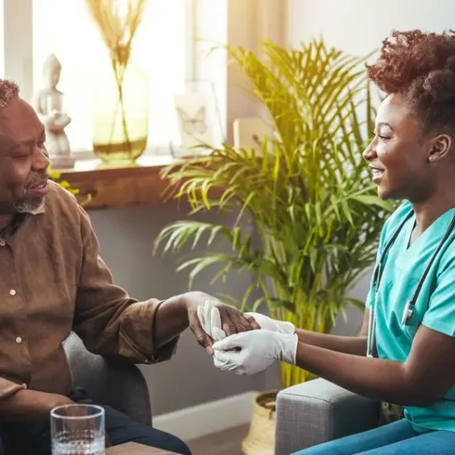
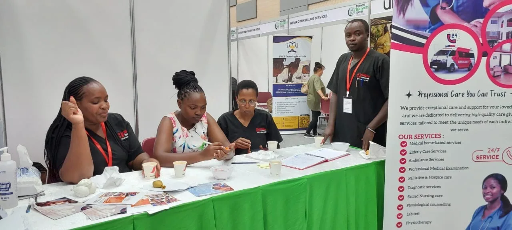

Care that feels like home.
Qualified nurses and caregivers for your loved ones, in your own home or at our residence in Karen, Nairobi.
We help the elderly, the sick and persons living with disabilities live with independence, comfort and dignity, supported by nurses who treat every client like family.
Our values
Compassion
Every visit is unhurried, gentle and full of genuine care and empathy.
Professional nurses
Qualified, vetted nurses who uphold the highest standards of care.
Personalised care
Care built around each person’s needs, routines and preferences.
At home, or at ours.

Care in your home
Nurses and caregivers who come to you, for a few hours, overnight or live-in, so your loved one stays close to family.
Explore home care
Our residence in Karen
A calm, homely residence with nurses on duty around the clock, for respite stays, recovery or longer-term care.
See the residenceNikko Homecare in numbers
Happy patients cared for
2,645+
Successful home care visits
4,285+
Years of experience
10+
Professional nurses and caregivers
50+
What we do.
All services
Starting care is simple.
- Step 1
Talk to a nurse
Call or send a message. We listen and answer your questions.
- Step 2
Care assessment
A nurse meets your loved one at home or at our residence.
- Step 3
A personal care plan
We match the right nurse or caregiver and agree a schedule.
- Step 4
Ongoing review
We keep you updated and adjust care as needs change.
Let’s plan the right care for your loved one.
Tell us what’s happening and a nurse will guide you through your options, from a few hours of help a week to round-the-clock care.